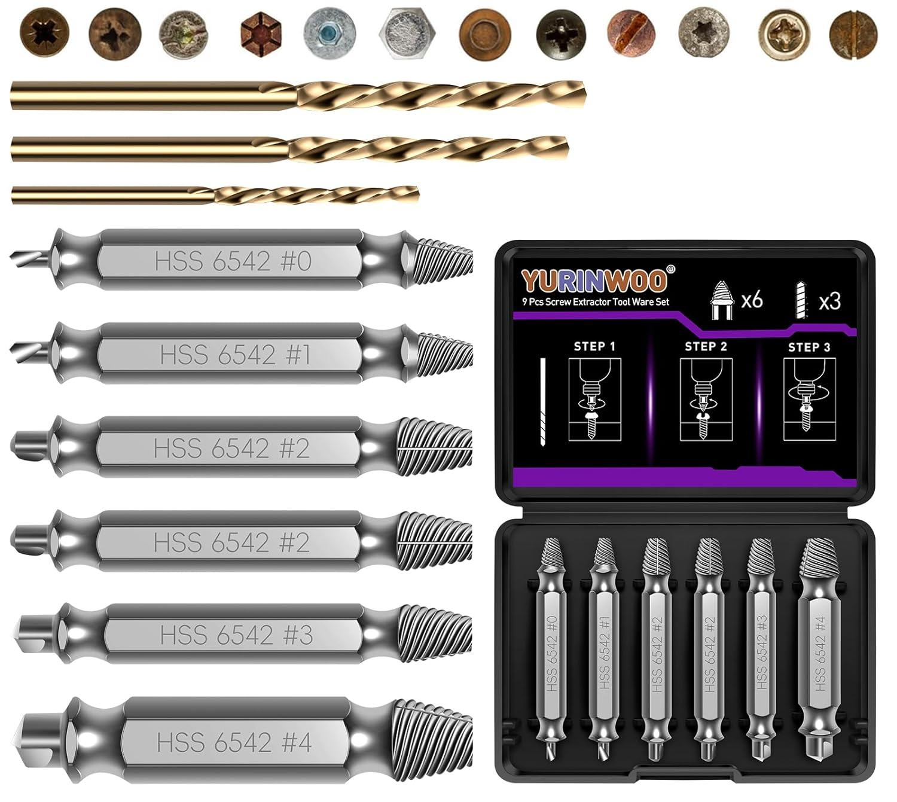

High Speed Steel (HSS)
HSS is a high-performance material used for cutting tools.
Material Name: High Speed Steel
Main Grade: HSS 18-4-1
Heat Resistance: Retains hardness at 500°C - 600°C
Key Property: High durability and toughness
Application: Used in cutting tools like drills and taps
Visual example of HSS tools:
